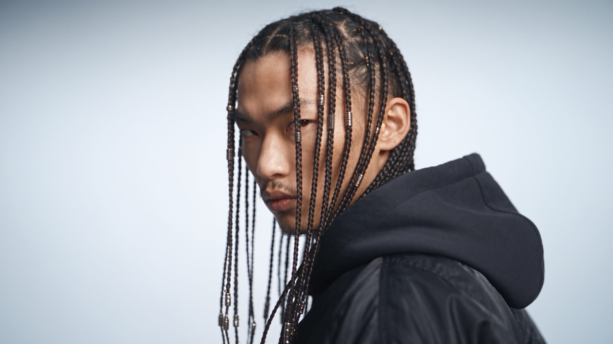
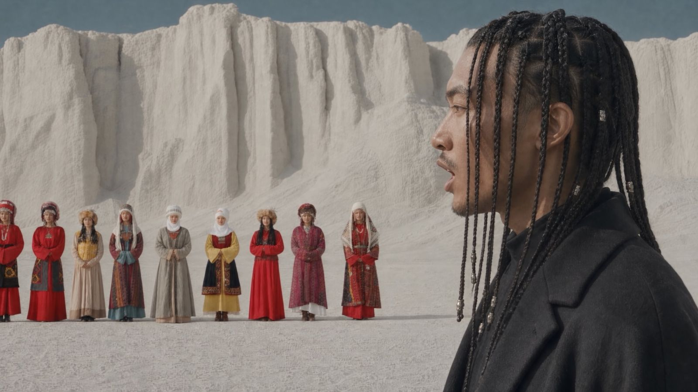
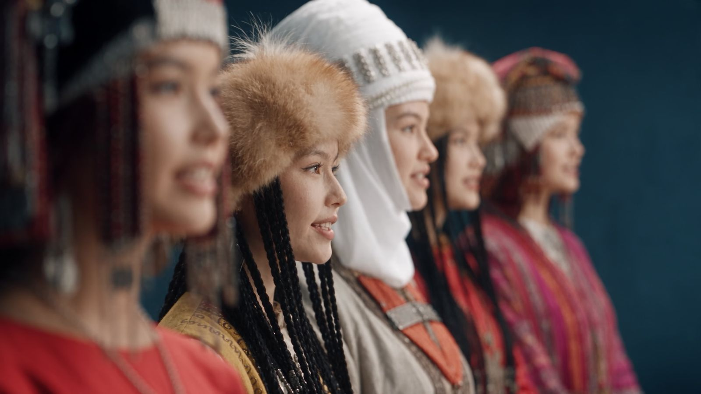
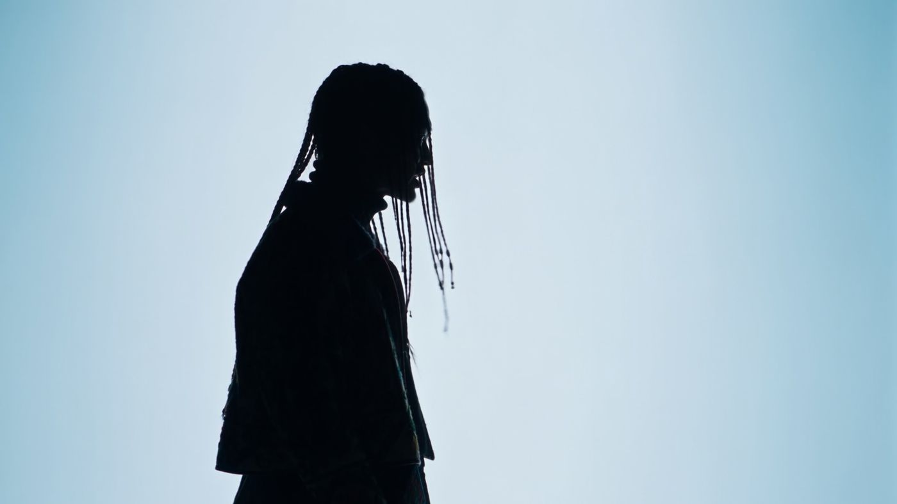
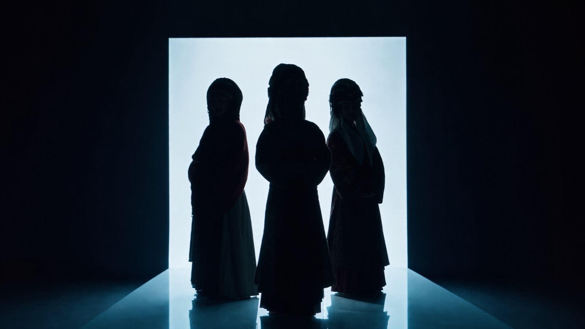

Артист · режиссёр клипов · фотограф
Я соединяю хип-хоп, традицию моего народа и веру в одну картину. Песни на кыргызском — и клипы, которые смотрит вся страна.
Альбом «Экклесия» — уже на всех площадкахAziel Timur — кыргызский артист, режиссёр клипов и фотограф
- 600 000+просмотров на YouTube
- 360 000+у клипа «Ырайымың түбөлүк»
- Эфир ТВклип показали на музыкальном канале в Казахстане
- «Экклесия»альбом вышел осенью 2026 года
Обо мне
Соединять точки
Я не играю ни на одном инструменте. Я не звукорежиссёр, не программист и не художник. И всё же каждая моя песня и каждый клип — мои, от первой секунды до последней.
Потому что моя работа — видеть целое раньше, чем оно появится. Слово, бит, свет, костюм, лицо в кадре, тишина между строками — у каждой части есть свой мастер, и каждый — лучший на своём месте. Я стою там, где всё это сходится, и соединяю точки, пока картина не оживёт.
Стив Джобс не паял платы, но собрал из гениальных деталей вещь, которой до него не было. Рик Рубин честно признаётся, что не владеет техникой: ему платят за уверенность во вкусе и за умение выразить то, что он чувствует. Мне близок этот путь. В шутку я называю себя Риком Рубином из Кыргызстана — но в каждой шутке есть доля правды.
Я родился в Бишкеке, до двенадцати лет рос в айыле у бабушки с дедушкой, а потом переехал в Германию. Сегодня живу во Франкфурте. Две культуры, два языка, две половины жизни — когда-то это казалось разными точками. Теперь я вижу, как они соединяются.

Я не играю на инструменте. Я слышу, как должен звучать весь оркестр.Aziel
История
Как я пришёл к музыке
Долгое время я только слушал музыку. Мне и в голову не приходило, что однажды я буду делать её сам.
-
Год экспериментов
Всё началось с любопытства. Целый год я пробовал, смешивал жанры, ломал правила и искал своё звучание. Это была чистая радость — игра без цели и без страха ошибиться.
-
Родной язык
Потом я заметил пустоту: хороших христианских песен на кыргызском почти не было — таких, которые хочется слушать снова и снова. И я начал писать сам, на языке, на котором со мной говорили в детстве.
-
Клипы
Песне нужен был образ. Без камеры, без актёров и без съёмочного дня — только видение, свет и нейросеть как кисть. «Ырайымың түбөлүк» разошёлся по всему Кыргызстану, а клип показали в эфире музыкального канала в Казахстане.
-
«Экклесия»
Осенью 2026 года вышел мой альбом «Экклесия» — песни поклонения на кыргызском, которые звучат по-новому и остаются нашими. И это только начало.
Клипы
Слово, ставшее кадром
Каждый кадр сначала появляется у меня внутри, потом — словами и только потом — на экране. Кыргызская традиция, хип-хоп и вера в одном кадре.
Ырайымың түбөлүк
«Милость Твоя вечна»
Американский хип-хоп и кыргызская традиция в одном клипе. Я хотел сделать то, чего в СНГ ещё никто не делал: новое, смелое, дерзкое. Больше 360 000 просмотров.
-
Машаяк
«Мессия» · больше 100 000 просмотров
-
Сенде
«В Тебе» · песня, которую я почти не выпустил
-
Падышам
«Мой Царь» · о власти имени Иисуса
-
Атанын жүрөгү
«Сердце Отца» · по 15-й главе Евангелия от Луки
Видео загружается с YouTube только после нажатия.
Альбом · 2026
Я не пишу песен, которые учат или пугают. Я пишу поклонение.
Для меня это не жанр, а оружие: когда звучит хвала, меняется сама атмосфера — в комнате, в сердце, вокруг нас. В Новом Завете словом «экклесия» называют церковь — тех, кого Бог позвал и собрал вместе. Этот альбом — для них.



Курс
Рисовать светом
Меня часто спрашивают, как я делаю свои клипы. Ответ — в этом курсе: от основ фотографии до готового AI-клипа на YouTube, на примере «Ырайымың түбөлүк».
- Два PDF: основы и AI-клип99 $
- PDF + живой урок в Discord, 120 минут299 $
Өнөктөш бол
Стань партнёром — построим вместе
Каждый клип — это идея, недели работы и свой бюджет. Если мои песни отзываются в тебе, ты можешь стать частью этого и помочь новым песням и клипам на кыргызском выйти в свет.
Связаться
Давай сделаем что-то новое
Коллаборации, клипы, съёмки или просто слово поддержки — пиши.